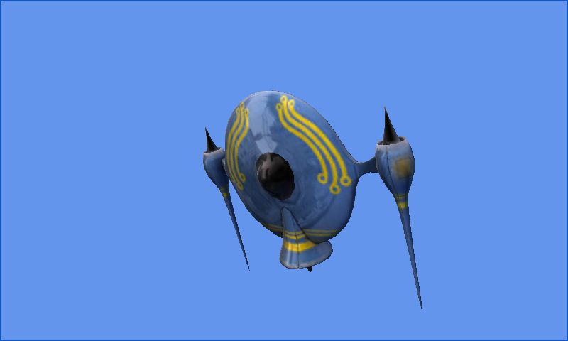

Custom Model Effect
Ported from Microsoft's XNA 4.0 Custom Model Effect Sample.
Source for this sample on GitHub ↗

Play ▸Opens in a new tab.
About this sample
A custom effect gives the rotating saucer a shiny surface with a static environment cube map. During the content build, the sample's processors attach the effect to the model and turn a photograph into the reflection map. The game loads the resulting model and supplies its world, view and projection matrices.
Controls
| Action | Control |
|---|---|
| View the rotating model | Automatic |
| Exit | Escape |